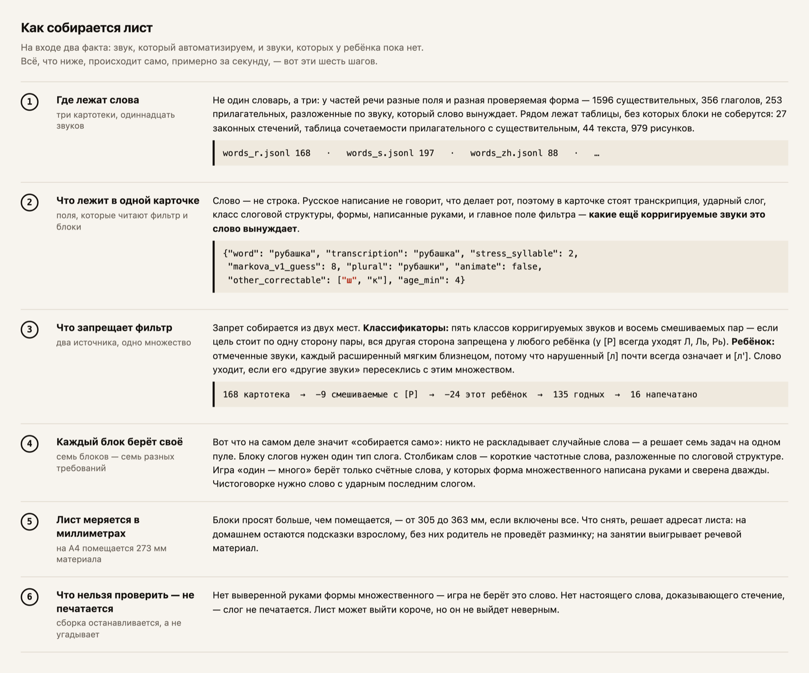
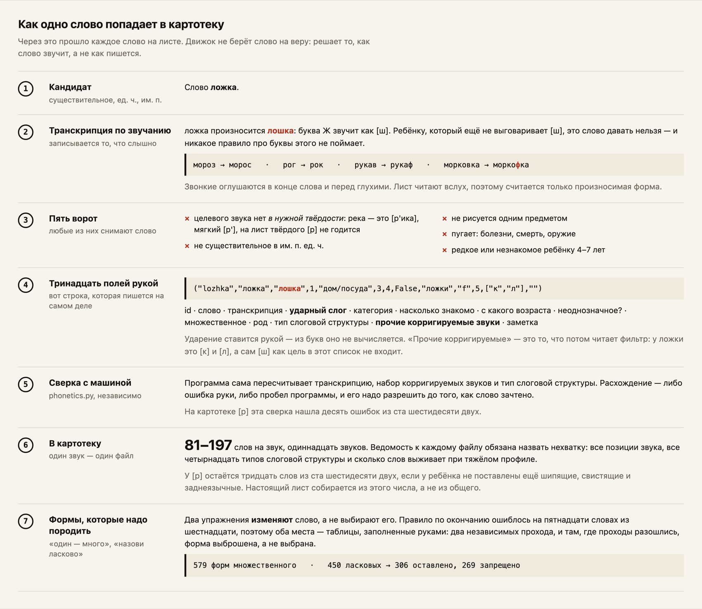
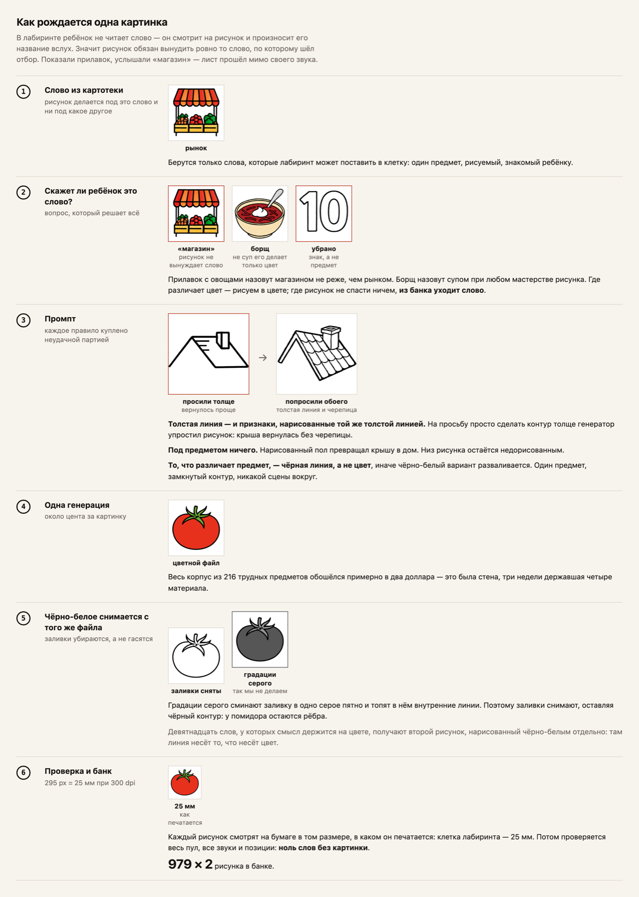
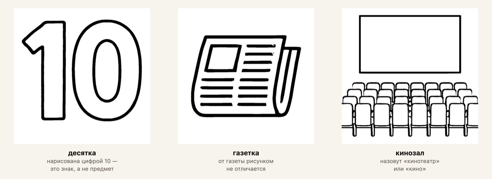

Печатный материал на автоматизацию звука, собранный под одного ребёнка. Каждое слово проверено по звукам, которые этому ребёнку ещё не даются.
На изготовление пособий у логопеда уходит час в день — отдельная строка в циклограмме. Бумажных альбомов много, и предел у всех один: напечатанная страница не знает, каких звуков у этого ребёнка ещё нет. Ребёнку, который ставит [р] и не выговаривает [ш], нельзя давать слово «рубашка».

Три картотеки, набор таблиц и один фильтр. Таблицы держат то, чего правилом не получить: формы, написанные руками, законные стечения, сочетаемость прилагательного с существительным. Остальное — как слова разойдутся по блокам и сколько влезет на страницу — следствия.
Фильтр работает только потому, что движок знает, как слово звучит, — а русское написание этого не сообщает. Это знание вписывается руками, слово за словом, и потом сверяется с программой, которая считает то же самое сама.

| слово | что выдало правило | что уходит на лист |
|---|---|---|
| стул | пять стулов | пять стульев |
| угол | два угола | два угла |
| лоб | пять лобов | пять лбов |
Пятьсот семьдесят девять слов после этого просклоняли руками, дважды и независимо. Оставили только те формы, на которых оба прохода сошлись.
| слово | «маленькая» форма | что это на самом деле | печатается |
|---|---|---|---|
| ворона | воронка | воронка для жидкости | нет |
| корона | коронка | зубная коронка | нет |
| пила | пилочка | пилка для ногтей | нет |
Четыреста пятьдесят слов прошли тот же двойной проход; сошлись на девяноста пяти процентах. Каждое расхождение выбрасывали, а не разрешали. Уцелело триста шесть форм, двести шестьдесят девять запрещены.
В лабиринте ребёнок не читает слово — он смотрит на рисунок и произносит название вслух. Показали прилавок, услышали «магазин» — лист прошёл мимо своего звука. Поэтому рисунки свои: 979 предметов, каждый сделан под слово, которое обязан вынудить.

Логопед написала с телефона, со скриншотом: кнопка предлагала гласную, которой лист не печатает. На мягкой цели она показывала «А», а лист печатал «РЯ»; на шипящих показывала «Ы», а лист печатал «ЖИ». Кнопка и печать считали слог в двух разных местах кода. Теперь обе зовут одну функцию. Это первая правка, пришедшая не от нас.
Ряд, которым выбирают материал, назывался жанрами: лист, дорожка, лабиринт, рассказы. Логопед прочитала этот ряд и спросила, почему на звук только один вариант, — ступени там были, но под нашими словами. Теперь ряд назван так, как назвала их она: звук, слог, слово, фраза, текст. Жанр стоит под ступенью мелким.
Инструмент открывался мастером: выбери звук, выбери материал, потом увидишь лист. Двадцать девять чужих генераторов открыли руками, чтобы проверить, так ли устроено поле. Мастеров среди них два, и оба вставляют шаг ради оплаты. Экран сняли. Лист теперь приходит собранным, а настройки стоят рядом.
Слово попадает на лист потому, что в нём есть нужный звук. Но ребёнок это слово не читает. Он смотрит на картинку и вслух называет то, что видит. Произнесённое слово и есть упражнение. Значит картинка обязана вынудить ровно одно слово. Три моих не вынуждали. Нарисованную цифру 10 назовут «десять», а не «десятка», под которую слово отбиралось. Газету назовут «газета», а не «газетка». Кинозал — «кино» или «кинотеатр». В этих словах нужного звука нет: три листа тренировали пустоту. Я убрал три слова, а рисунки оставил. Рисунки нормальные, ошибка была в выборе слова.

Оба числились работающими возможностями. Ни одно почти ни на каком листе не собиралось: правило, на котором они стояли, отключили двумя днями раньше, а заменившая его таблица покрывала двадцать три слова из тысячи семисот. Их считали существующими, а их не было.
Дорожка на один звонкий согласный печатала слоги, которые при чтении вслух звучат его глухой парой. Лист тренировал противоположный звук. Ещё у двух материалов был изъян того же рода. Все три сняли с бумаги в тот день, когда это измерили. Как выглядит буква и что с ней делает рот — разные факты, и решать позволено только второму.
Навигация стояла на мысли, что одно занятие равно одной ступени сложности. Десять настоящих планов занятий закодировали в набор из тридцати трёх названий заданий, и ни один так не устроен. Логопед идёт от того, как далеко этот ребёнок продвинулся с этим звуком, и строит разбег к нему. Мысль отброшена; движок, проверенный на том же наборе, устоял.
Логопед описала формат, который ей нужен. В код попал мой пересказ её слов, а не сами слова. Через неделю их сравнили: формат в коде оказался не её. Её слова теперь лежат нетронутыми в отдельном файле, а любое их прочтение — рядом, но никогда поверх.